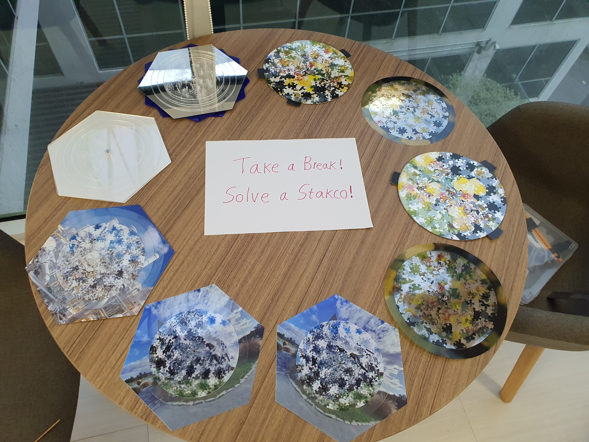
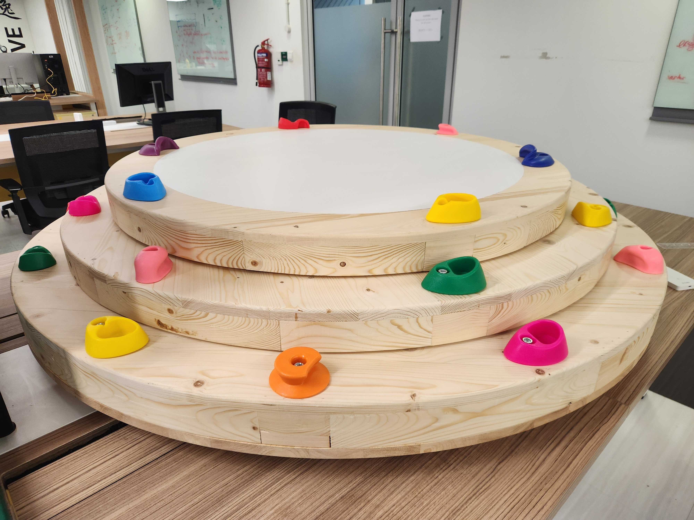
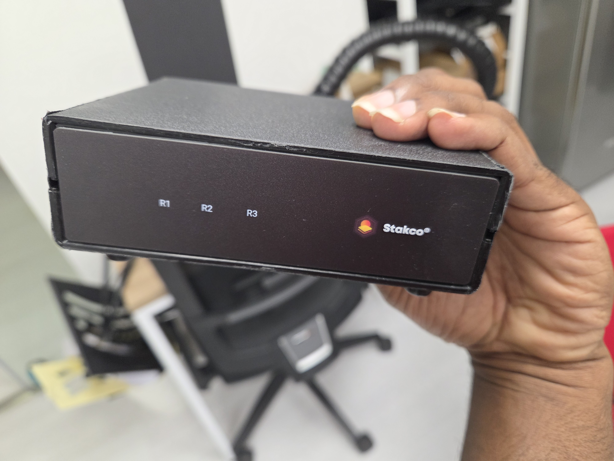
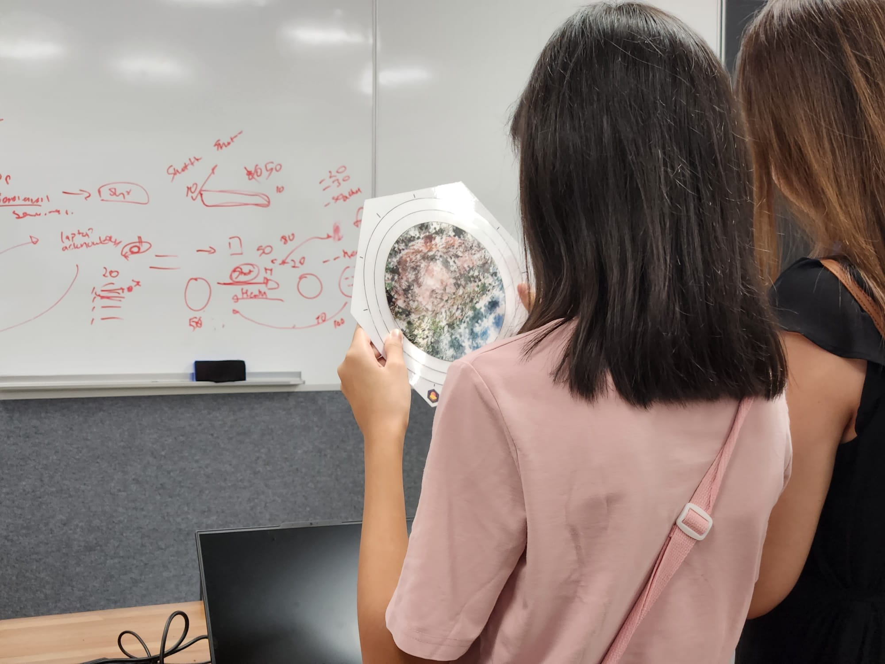
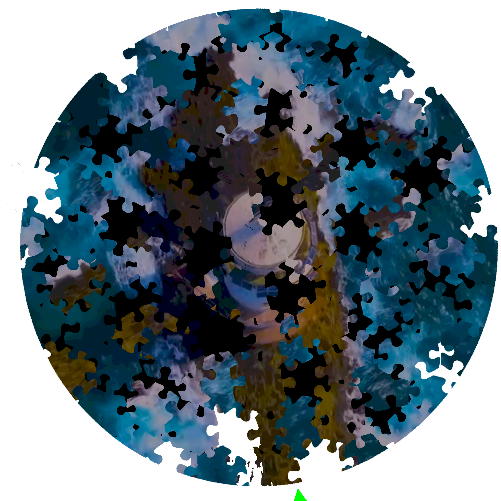
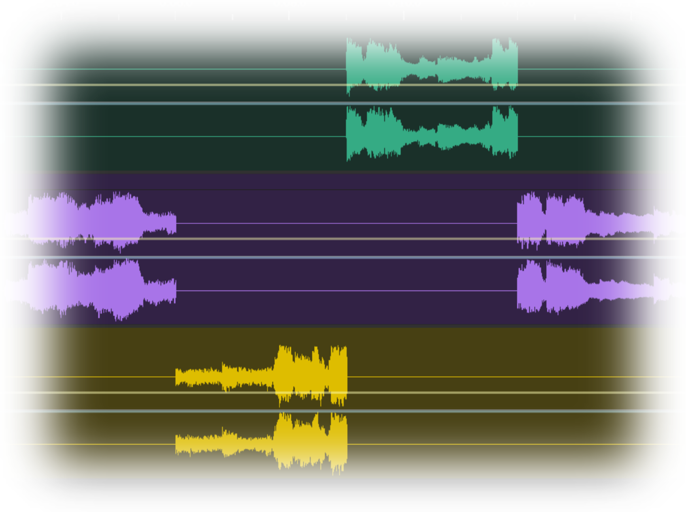
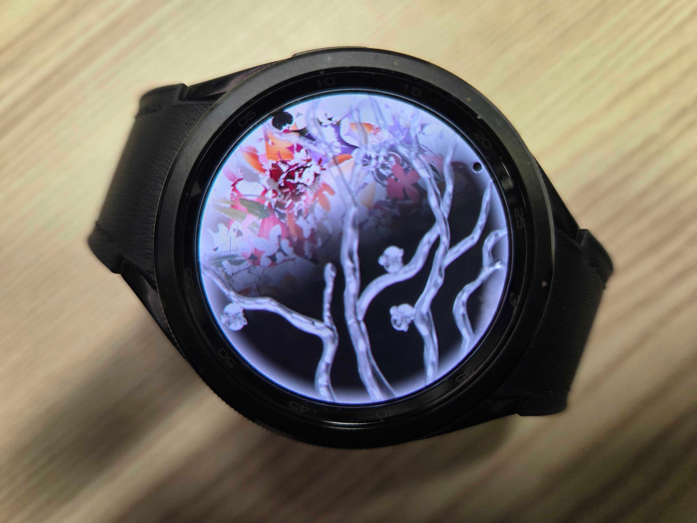
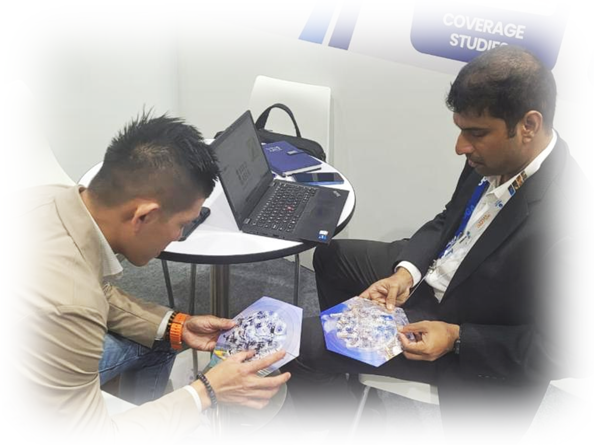

Pioneering the future of interactive puzzles through innovative research and development
Exploring the boundaries of interactive puzzle technology

Exploring novel methods to create dynamic puzzles using segmented multimedia content, enhancing user interaction through layered manipulations. This research investigates how different media types can be decomposed and reconstructed through puzzle mechanics.
Read Research
Investigating various interface modalities to enhance digital puzzle experiences, including unconventional and cutting-edge control systems. Our research explores how different input methods can create more intuitive and engaging puzzle interactions.
View Studies
Pushing the boundaries of traditional puzzle formats by expanding into multi-dimensional and immersive environments, offering a new layer of complexity. This research explores VR, AR, and spatial computing applications for puzzle experiences.
Explore VR
Developing inclusive puzzle formats that utilize alternative sensory inputs to engage users, broadening accessibility and interaction possibilities. Our research focuses on making puzzles accessible to users with diverse abilities and needs.
Learn MoreRevolutionary puzzle formats that expand beyond traditional boundaries

With Video Stakcos, we extended our puzzle concept from static 2D images to dynamic video content. This introduces a new layer of complexity, where the puzzle is constantly evolving—requiring continuous visual tracking, temporal alignment, and active attention from the user.
From a research perspective, this format opens up new directions in studying cognitive load, attention span, and pattern recognition in dynamic environments. Early feedback suggests that video puzzles demand significantly higher mental engagement, making them a promising tool for exploring real-time problem-solving and perceptual learning.

We are developing Audio Stakcos by adapting the original Stakco concept to the auditory domain. Instead of visuals, segmented audio waveforms are used to create an interactive, multi-track puzzle experience. This research explores new ways of engaging users through sound-based interaction.
This groundbreaking approach opens puzzles to blind and low-vision users, creating inclusive experiences that rely on spatial audio, rhythm recognition, and auditory pattern matching.
Expanding Stakco across devices and environments

Experimental Stakco apps deployed on Galaxy Watch. Digital Stakcos are robust enough to deploy on many platforms and always provide a unique experience which can be curated in many domains and contexts. This research explores micro-interactions and gesture-based puzzle solving.
Watch AppSimilar to Galaxy Watch, we successfully run Stakco digital puzzle experience on Android TV and control puzzles using multiple input modalities. This research investigates how large screens and remote controls can create collaborative puzzle experiences.
TV ExperienceReal-world applications and community engagement
Stakco produces puzzles with images crafted by emerging artists. We add value to their art pieces and their artworks add value to Stakcos. This research explores how interactive puzzles can serve as a new medium for artistic expression and artist promotion.
Artist Program
We conducted experiments deploying printed puzzles during community and business activities. We observed they are really good ice breakers and entertainment art pieces. Not only just a puzzle, but it can also carry a message, a story, or a brand. We are working on products for business and community events.
View ResultsJoin us in pushing the boundaries of interactive puzzle technology. Whether you're a researcher, educator, or innovator, let's explore the future together.